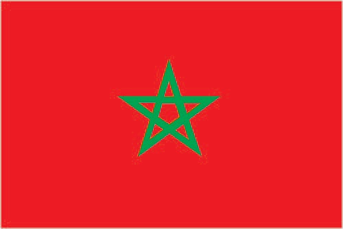
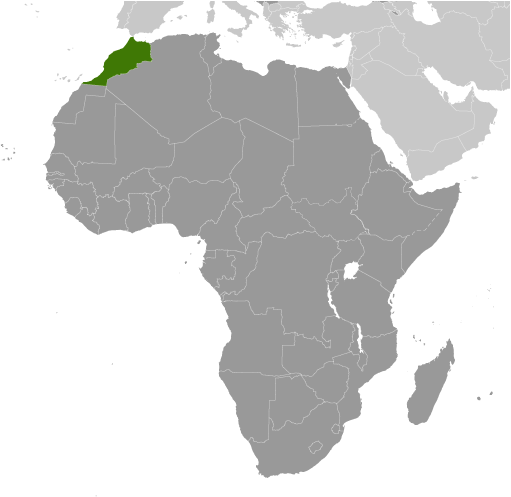
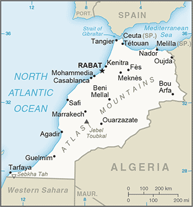

Africa :: MOROCCO
Introduction :: MOROCCO
-
In 788, about a century after the Arab conquest of North Africa, a series of Moroccan Muslim dynasties began to rule in Morocco. In the 16th century, the Sa'adi monarchy, particularly under Ahmad al-MANSUR (1578-1603), repelled foreign invaders and inaugurated a golden age. The Alaouite Dynasty, to which the current Moroccan royal family belongs, dates from the 17th century. In 1860, Spain occupied northern Morocco and ushered in a half century of trade rivalry among European powers that saw Morocco's sovereignty steadily erode; in 1912, the French imposed a protectorate over the country. A protracted independence struggle with France ended successfully in 1956. The internationalized city of Tangier and most Spanish possessions were turned over to the new country that same year. Sultan MOHAMMED V, the current monarch's grandfather, organized the new state as a constitutional monarchy and in 1957 assumed the title of king. Since Spain's 1976 withdrawal from what is today called Western Sahara, Morocco has extended its de facto administrative control to roughly 80% of this territory; however, the UN does not recognize Morocco as the administering power for Western Sahara. The UN since 1991 has monitored a cease-fire between Morocco and the Polisario Front - Western Sahara's liberation movement - and leads ongoing negotiations over the status of the territory.King MOHAMMED VI in early 2011 responded to the spread of pro-democracy protests in the region by implementing a reform program that included a new constitution, passed by popular referendum in July 2011, under which some new powers were extended to parliament and the prime minister but ultimate authority remains in the hands of the monarch. In November 2011, the Justice and Development Party (PJD) - a moderate Islamist party - won the largest number of seats in parliamentary elections, becoming the first Islamist party to lead the Moroccan Government. In September 2015, Morocco held its first ever direct elections for regional councils, one of the reforms included in the 2011 constitution. The PJD again won the largest number of seats in nationwide parliamentary elections in October 2016.
Geography :: MOROCCO
-
Northern Africa, bordering the North Atlantic Ocean and the Mediterranean Sea, between Algeria and Western Sahara32 00 N, 5 00 WAfricatotal: 446,550 sq kmland: 446,300 sq kmwater: 250 sq kmcountry comparison to the world: 59slightly more than three times the size of New York; slightly larger than Californiatotal: 2,362.5 kmborder countries (3): Algeria 1,900 km, Western Sahara 444 km, Spain (Ceuta) 8 km, Spain (Melilla) 10.5 kmnote: an additional 75-meter border segment exists between Morocco and the Spanish exclave of Penon de Velez de la Gomera1,835 kmterritorial sea: 12 nmcontiguous zone: 24 nmexclusive economic zone: 200 nmcontinental shelf: 200-m depth or to the depth of exploitationMediterranean, becoming more extreme in the interiormountainous northern coast (Rif Mountains) and interior (Atlas Mountains) bordered by large plateaus with intermontane valleys, and fertile coastal plainsmean elevation: 909 melevation extremes: lowest point: Sebkha Tah -59 mhighest point: Jebel Toubkal 4,165 mphosphates, iron ore, manganese, lead, zinc, fish, saltagricultural land: 67.5%arable land 17.5%; permanent crops 2.9%; permanent pasture 47.1%forest: 11.5%other: 21% (2011 est.)14,850 sq km (2012)the highest population density is found along the Atlantic and Mediterranean coasts; a number of densely populated agglomerations are found scattered through the Atlas Mountainsnorthern mountains geologically unstable and subject to earthquakes; periodic droughts; windstorms; flash floods; landslidesland degradation/desertification (soil erosion resulting from farming of marginal areas, overgrazing, destruction of vegetation); water supplies contaminated by raw sewage; siltation of reservoirs; oil pollution of coastal watersparty to: Biodiversity, Climate Change, Climate Change-Kyoto Protocol, Desertification, Endangered Species, Hazardous Wastes, Law of the Sea, Marine Dumping, Ozone Layer Protection, Ship Pollution, Wetlands, Whalingsigned, but not ratified: Environmental Modificationstrategic location along Strait of Gibraltar; the only African nation to have both Atlantic and Mediterranean coastlines
People and Society :: MOROCCO
-
33,986,655 (July 2017 est.)country comparison to the world: 40noun: Moroccan(s)adjective: MoroccanArab-Berber 99%, other 1%Arabic (official), Berber languages (Tamazight (official), Tachelhit, Tarifit), French (often the language of business, government, and diplomacy)Muslim 99% (official; virtually all Sunni, <0.1% Shia), other 1% (includes Christian, Jewish, and Baha'i); note - Jewish about 6,000 (2010 est.)Morocco is undergoing a demographic transition. Its population is growing but at a declining rate, as people live longer and women have fewer children. Infant, child, and maternal mortality rates have been reduced through better health care, nutrition, hygiene, and vaccination coverage, although disparities between urban and rural and rich and poor households persist. Morocco’s shrinking child cohort reflects the decline of its total fertility rate from 5 in mid-1980s to 2.2 in 2010, which is a result of increased female educational attainment, higher contraceptive use, delayed marriage, and the desire for smaller families. Young adults (persons aged 15-29) make up almost 26% of the total population and represent a potential economic asset if they can be gainfully employed. Currently, however, many youths are unemployed because Morocco’s job creation rate has not kept pace with the growth of its working-age population. Most youths who have jobs work in the informal sector with little security or benefits.During the second half of the 20th century, Morocco became one of the world’s top emigration countries, creating large, widely dispersed migrant communities in Western Europe. The Moroccan Government has encouraged emigration since its independence in 1956, both to secure remittances for funding national development and as an outlet to prevent unrest in rebellious (often Berber) areas. Although Moroccan labor migrants earlier targeted Algeria and France, the flood of Moroccan “guest workers” from the mid-1960s to the early 1970s spread widely across northwestern Europe to fill unskilled jobs in the booming manufacturing, mining, construction, and agriculture industries. Host societies and most Moroccan migrants expected this migration to be temporary, but deteriorating economic conditions in Morocco related to the 1973 oil crisis and tighter European immigration policies resulted in these stays becoming permanent.A wave of family migration followed in the 1970s and 1980s, with a growing number of second generation Moroccans opting to become naturalized citizens of their host countries. Spain and Italy emerged as new destination countries in the mid-1980s, but their introduction of visa restrictions in the early 1990s pushed Moroccans increasingly to migrate either legally by marrying Moroccans already in Europe or illegally to work in the underground economy. Women began to make up a growing share of these labor migrants. At the same time, some higher-skilled Moroccans went to the US and Quebec, Canada.In the mid-1990s, Morocco developed into a transit country for asylum seekers from sub-Saharan Africa and illegal labor migrants from sub-Saharan Africa and South Asia trying to reach Europe via southern Spain, Spain’s Canary Islands, or Spain’s North African enclaves, Ceuta and Melilla. Forcible expulsions by Moroccan and Spanish security forces have not deterred these illegal migrants or calmed Europe’s security concerns. Rabat remains unlikely to adopt an EU agreement to take back third-country nationals who have entered the EU illegally via Morocco. Thousands of other illegal migrants have chosen to stay in Morocco until they earn enough money for further travel or permanently as a “second-best” option. The launching of a regularization program in 2014 legalized the status of some migrants and granted them equal access to education, health care, and work, but xenophobia and racism remain obstacles.0-14 years: 25.77% (male 4,450,360/female 4,308,955)15-24 years: 17.04% (male 2,879,828/female 2,910,029)25-54 years: 42.32% (male 6,956,186/female 7,428,129)55-64 years: 8.13% (male 1,365,611/female 1,398,553)65 years and over: 6.74% (male 1,034,188/female 1,254,816) (2017 est.)total dependency ratio: 51.6youth dependency ratio: 41.9elderly dependency ratio: 9.7potential support ratio: 10.3 (2015 est.)total: 29.3 yearsmale: 28.6 yearsfemale: 29.9 years (2017 est.)country comparison to the world: 1240.97% (2017 est.)country comparison to the world: 11517.7 births/1,000 population (2017 est.)country comparison to the world: 1054.9 deaths/1,000 population (2017 est.)country comparison to the world: 195-3.2 migrant(s)/1,000 population (2017 est.)country comparison to the world: 177the highest population density is found along the Atlantic and Mediterranean coasts; a number of densely populated agglomerations are found scattered through the Atlas Mountainsurban population: 61.2% of total population (2017)rate of urbanization: 1.92% annual rate of change (2015-20 est.)Casablanca 3.515 million; RABAT (capital) 1.967 million; Fes 1.172 million; Marrakech 1.134 million; Tangier 982,000 (2015)at birth: 1.05 male(s)/female0-14 years: 1.03 male(s)/female15-24 years: 0.99 male(s)/female25-54 years: 0.94 male(s)/female55-64 years: 0.99 male(s)/female65 years and over: 0.82 male(s)/femaletotal population: 0.97 male(s)/female (2016 est.)121 deaths/100,000 live births (2015 est.)country comparison to the world: 69total: 21.9 deaths/1,000 live birthsmale: 26 deaths/1,000 live birthsfemale: 17.6 deaths/1,000 live births (2017 est.)country comparison to the world: 76total population: 77.1 yearsmale: 74 yearsfemale: 80.3 years (2017 est.)country comparison to the world: 772.11 children born/woman (2017 est.)country comparison to the world: 10467.4% (2010/11)5.9% of GDP (2014)country comparison to the world: 1070.62 physicians/1,000 population (2014)0.9 beds/1,000 population (2012)improved:urban: 98.7% of populationrural: 65.3% of populationtotal: 85.4% of populationunimproved:urban: 1.3% of populationrural: 34.7% of populationtotal: 14.6% of population (2015 est.)improved:urban: 84.1% of populationrural: 65.5% of populationtotal: 76.7% of populationunimproved:urban: 15.9% of populationrural: 34.5% of populationtotal: 23.3% of population (2015 est.)0.1% (2016 est.)country comparison to the world: 10622,000 (2016 est.)country comparison to the world: 74<1000 (2016 est.)26.1% (2016)country comparison to the world: 443.1% (2011)country comparison to the world: 1135.3% of GDP (2009)country comparison to the world: 59definition: age 15 and over can read and writetotal population: 68.5%male: 78.6%female: 58.8% (2015 est.)total: 12 yearsmale: 13 yearsfemale: 12 years (2012)total: 19.9%male: 20.8%female: 17.7% (2014 est.)country comparison to the world: 60
Government :: MOROCCO
-
conventional long form: Kingdom of Moroccoconventional short form: Moroccolocal long form: Al Mamlakah al Maghribiyahlocal short form: Al Maghribetymology: the English name "Morocco" derives from, respectively, the Spanish and Portuguese names "Marruecos" and "Marrocos," which stem from "Marrakesh" the Latin name for the former capital of ancient Morocco; the Arabic name "Al Maghrib" translates as "The West"parliamentary constitutional monarchyname: Rabatgeographic coordinates: 34 01 N, 6 49 Wtime difference: UTC 0 (5 hours ahead of Washington, DC, during Standard Time)daylight saving time: +1 hr, begins last Sunday in March; ends last Sunday in October11 regions (recognized); Beni Mellal-Khenifra, Casablanca-Settat, Draa-Tafilalet, Fes-Meknes, Guelmim-Oued Noun, Laayoune-Sakia al Hamra, Oriental, Marrakech-Safi, Rabat-Sale-Kenitra, Souss-Massa, Tanger-Tetouan-Al Hoceimanote: Morocco claims the territory of Western Sahara, the political status of which is considered undetermined by the US Government; portions of the regions Guelmim-Oued Noun and Laayoune-Sakia al Hamra as claimed by Morocco lie within Western Sahara; Morocco also claims a 12th region, Dakhla-Oued ed Dahab, that falls entirely within Western Sahara2 March 1956 (from France)Throne Day (accession of King MOHAMMED VI to the throne), 30 July (1999)history: several previous; latest drafted 17 June 2011, approved by referendum 1 July 2011; note - sources disagree on whether the 2011 referendum was for a new constitution or for reforms to the previous constitutionamendments: proposed by the king, by the prime minister, or by members in either chamber of Parliament; passage requires at least two-thirds majority vote by both chambers and approval in a referendum; the king can opt to submit self-initiated proposals directly to a referendum (2016)mixed legal system of civil law based on French law and Islamic law; judicial review of legislative acts by Constitutional Courthas not submitted an ICJ jurisdiction declaration; non-party state to the ICCtcitizenship by birth: nocitizenship by descent only: the father must be a citizen of Morocco; if the father is unknown or stateless, the mother must be a citizendual citizenship recognized: yesresidency requirement for naturalization: 5 years18 years of age; universalchief of state: King MOHAMMED VI (since 30 July 1999)head of government: Prime Minister Saad-Eddine al-OTHMANI (since 17 March 2017)cabinet: Council of Ministers chosen by the prime minister in consultation with Parliament and appointed by the monarchelections/appointments: the monarchy is hereditary; prime minister appointed by the monarch from the majority party following legislative electionsdescription: bicameral Parliament consists of the Chamber of Advisors (120 seats; members indirectly elected by an electoral college of local councils, professional organizations, and labor unions; members serve 6-year terms) and the Chamber of Representatives (395 seats; 305 members directly elected in multi-seat constituencies by proportional representation vote and 90 directly elected in a single nationwide constituency by proportional representation vote; members serve 5-year terms); note - in the national constituency, 60 seats are reserved for women and 30 reserved for those under age 40elections: Chamber of Advisors - last held on 2 October 2015 (next to be held in fall 2021); Chamber of Representatives - last held on 7 October 2016 (next to be held in fall 2021)election results: Chamber of Advisors- percent of vote by party - NA; seats by party - NA; Chamber of Representatives - percent of vote by party NA; seats by party - PJD 125, PAM 102, PI 46, RNI 37, MP 27, USFP 20, UC 19, PPS 12, MDS 3, other 4highest court(s): Supreme Court or Court of Cassation (consists of 5-judge panels organized into civil, family matters, commercial, administrative, social, and criminal sections); Constitutional Court (consists of 12 members)judge selection and term of office: Supreme Court judges appointed by the Superior Council of Judicial Power, a 20-member body presided by the monarch and including the Supreme Court president, the prosecutor general, representatives of the appeals and first instance courts - among them 1 woman magistrate, the president of the National Council of the Rights of Man, and 5 "notable persons" appointed by the monarch; judges appointed for life; Constitutional Court members - 6 designated by the monarch and 6 elected by Parliament; court president appointed by the monarch from among the court members; members serve 9-year non-renewable termssubordinate courts: courts of appeal; High Court of Justice; administrative and commercial courts; regional and sadad courts (for religious, civil and administrative, and penal adjudication); first instance courtsAction Party or PA [Mohammed EL IDRISSI]Amal (hope) Party [Mohamed BANI]An-Nahj Ad-Dimocrati or An-Nahj [Mustapha BRAHMA]Authenticity and Modernity Party or PAM [vacant]Constitutional Union Party or UC [Mohamed SAJID]Democratic and Social Movement or MDS [Abdessamad ARCHANE]Democratic Forces Front or FFD [Mustapha BENALI]Democratic Oath Party or SDDemocratic Socialist Vanguard Party or PADS [Abderrahman BENAMROU]Democratic Society Party [Zhour CHAKKAFI]Environment and Development Party or PED [Karim HRITAN]Green Left Party [Mohamed FARES]Istiqlal (Independence) Party or PI [Hamid CHABAT]Ittihadi National Congress or CNI [Abdesalam EL AZIZ]Labor Party or PTMoroccan Liberal Party or PML [Mohammed ZIANE]Moroccan Union for Democracy or UMD [Jamal MANDRI]National Rally of Independents or RNI [Aziz AKHANNOUCH]Neo-Democrats Party [Mohamed DARIF]Party of Development Reform or PRD [Abderrahmane EL KOHEN]Party of Justice and Development or PJD [Abdelillah BENKIRANE]Party of Liberty and Social Justice [Miloud MOUSSAOUI]Popular Movement or MP [Mohand LAENSER]Progress and Socialism Party or PPS [Nabil BENABDELLAH]Renaissance and Virtue Party [Mohamed KHALIDI]Renaissance Party [Said EL GHENNIOUI]Renewal and Equity Party or PRE [Chakir ACHEHABAR]Shoura (consultation) and Istiqlal Party [Ahmed BELGHAZI]Social Center Party or PCS [Lahcen MADIH]Socialist Party [Abdelmajid BOUZOUBAA]Socialist Union of Popular Forces or USFP [Driss LACHGAR]Unified Socialist Party or GSU [Nabila MOUNIB]Unity and Democracy Party [Ahmed FITRI]Democratic Confederation of Labor or CDT [Noubir EL AMAOUI]General Union of Moroccan Workers or UGTM [Mohamed KAFI CHERRAT]Justice and Charity Organization or JCO [Mohammed ben Abdesslam ABBADI]Moroccan Employers Association or CGEM [Miriem BENSALAH-CHAQROUN]National Labor Union of Morocco or UNMT [Abdessalam MAATI]Union of Moroccan Workers or UMT [Miloudi EL MOUKHARIK]ABEDA, AfDB, AFESD, AMF, AMU, CAEU, CD, EBRD, FAO, G-11, G-77, IAEA, IBRD, ICAO, ICC (national committees), ICRM, IDA, IDB, IFAD, IFC, IFRCS, IHO, ILO, IMF, IMO, IMSO, Interpol, IOC, IOM, IPU, ISO, ITSO, ITU, ITUC (NGOs), LAS, MIGA, MONUSCO, NAM, OAS (observer), OIC, OIF, OPCW, OSCE (partner), Pacific Alliance (observer), Paris Club (associate), PCA, SICA (observer), UN, UNCTAD, UNESCO, UNHCR, UNIDO, UNOCI, UNSC (temporary), UNWTO, UPU, WCO, WHO, WIPO, WMO, WTOchief of mission: Ambassador Lalla Joumala ALAOUI (since 24 April 2017)chancery: 1601 21st Street NW, Washington, DC 20009telephone: [1] (202) 462-7979FAX: [1] (202) 462-7643consulate(s) general: New Yorkchief of mission: Ambassador (vacant); Charge d'Affaires Stephanie MILEY (since 20 January 2017)embassy: Km 5.7 Avenue Mohammed VI, Souissi, Rabat 10170mailing address: Unit 9400, Box Front Office, DPO, AE 09718telephone: [212] 537 637 200FAX: [212] 537 637 201consulate(s) general: Casablancared with a green pentacle (five-pointed, linear star) known as Sulayman's (Solomon's) seal in the center of the flag; red and green are traditional colors in Arab flags, although the use of red is more commonly associated with the Arab states of the Persian Gulf; the pentacle represents the five pillars of Islam and signifies the association between God and the nation; design dates to 1912pentacle symbol, lion; national colors: red, greenname: "Hymne Cherifien" (Hymn of the Sharif)lyrics/music: Ali Squalli HOUSSAINI/Leo MORGANnote: music adopted 1956, lyrics adopted 1970
Economy :: MOROCCO
-
Morocco has capitalized on its proximity to Europe and relatively low labor costs to work towards building a diverse, open, market-oriented economy. Key sectors of the economy include agriculture, tourism, aerospace, automotive, phosphates, textiles, apparel, and subcomponents. Morocco has increased investment in its port, transportation, and industrial infrastructure to position itself as a center and broker for business throughout Africa. Industrial development strategies and infrastructure improvements - most visibly illustrated by a new port and free trade zone near Tangier - are improving Morocco's competitiveness.In the 1980s, Morocco was a heavily indebted country before pursuing austerity measures and pro-market reforms, overseen by the IMF. Since taking the throne in 1999, King MOHAMMED VI has presided over a stable economy marked by steady growth, low inflation, and gradually falling unemployment, although poor harvests and economic difficulties in Europe contributed to an economic slowdown. To boost exports, Morocco entered into a bilateral Free Trade Agreement with the US in 2006 and an Advanced Status agreement with the EU in 2008. In late 2014, Morocco eliminated subsidies for gasoline, diesel, and fuel oil, dramatically reducing outlays that weighted on the country’s budget and current account. Subsidies on butane gas and certain food products remain in place. Morocco also seeks to expand its renewable energy capacity with a goal of making renewable more than 50% of installed electricity generation capacity by 2030.Despite Morocco's economic progress, the country suffers from high unemployment, poverty, and illiteracy, particularly in rural areas. Key economic challenges for Morocco include reforming the education system and the judiciary.$281.4 billion (2016 est.)$274.5 billion (2015 est.)$259.8 billion (2014 est.)note: data are in 2016 dollarscountry comparison to the world: 59$103.6 billion (2016 est.)1.2% (2016 est.)4.6% (2015 est.)2.7% (2014 est.)country comparison to the world: 156$8,200 (2016 est.)$8,100 (2015 est.)$7,900 (2014 est.)note: data are in 2016 dollarscountry comparison to the world: 14828.2% of GDP (2016 est.)28.7% of GDP (2015 est.)26.6% of GDP (2014 est.)country comparison to the world: 29household consumption: 57.9%government consumption: 19.3%investment in fixed capital: 30.2%investment in inventories: 2.9%exports of goods and services: 35.1%imports of goods and services: -45.3% (2016 est.)agriculture: 13.6%industry: 29.5%services: 56.8% (2016 est.)barley, wheat, citrus fruits, grapes, vegetables, olives; livestock; wineautomotive parts, phosphate mining and processing, aerospace, food processing, leather goods, textiles, construction, energy, tourism1.2% (2016 est.)country comparison to the world: 13711.75 million (2016 est.)country comparison to the world: 51agriculture: 39.1%industry: 20.3%services: 40.5% (2014 est.)9.4% (2016 est.)9.7% (2015 est.)country comparison to the world: 12715% (2007 est.)lowest 10%: 2.7%highest 10%: 33.2% (2007)40.9 (2007 est.)39.5 (1999 est.)country comparison to the world: 57revenues: $24.65 billionexpenditures: $29.3 billion (2016 est.)23.8% of GDP (2016 est.)country comparison to the world: 124-4.5% of GDP (2016 est.)country comparison to the world: 15077.5% of GDP (2016 est.)75.3% of GDP (2015 est.)country comparison to the world: 41calendar year1.6% (2016 est.)1.6% (2015 est.)country comparison to the world: 1126.5% (31 December 2010)3.31% (31 December 2009)country comparison to the world: 645.73% (31 December 2016 est.)5.73% (31 December 2015 est.)country comparison to the world: 125$74.7 billion (31 December 2016 est.)$71.58 billion (31 December 2015 est.)country comparison to the world: 44$89.22 billion (31 December 2016 est.)$85.59 billion (31 December 2015 est.)country comparison to the world: 56$109.3 billion (31 December 2016 est.)$106.5 billion (31 December 2015 est.)country comparison to the world: 54$45.93 billion (31 December 2015 est.)$52.75 billion (31 December 2014 est.)$53.83 billion (31 December 2013 est.)country comparison to the world: 54$-4.537 billion (2016 est.)$-2.161 billion (2015 est.)country comparison to the world: 173$18.88 billion (2016 est.)$18.62 billion (2015 est.)country comparison to the world: 70clothing and textiles, automobiles, electric components, inorganic chemicals, transistors, crude minerals, fertilizers (including phosphates), petroleum products, citrus fruits, vegetables, fishSpain 23.4%, France 21.1%, Italy 4.6% (2016)$36.59 billion (2016 est.)$33.31 billion (2015 est.)country comparison to the world: 56crude petroleum, textile fabric, telecommunications equipment, wheat, gas and electricity, transistors, plasticsSpain 15.7%, France 13.2%, China 9.1%, US 6.4%, Germany 5.9%, Italy 5.4%, Turkey 4.4% (2016)$25.37 billion (31 December 2016 est.)$23.01 billion (31 December 2015 est.)country comparison to the world: 53$44.65 billion (31 December 2016 est.)$42.99 billion (31 December 2015 est.)country comparison to the world: 67$54.78 billion (31 December 2016 est.)$49.67 billion (31 December 2015 est.)country comparison to the world: 55$5.203 billion (31 December 2016 est.)$4.557 billion (31 December 2015 est.)country comparison to the world: 70Moroccan dirhams (MAD) per US dollar -9.7787 (2016 est.)9.7787 (2015 est.)9.7351 (2014 est.)8.3798 (2013 est.)8.6 (2012 est.)
Energy :: MOROCCO
-
population without electricity: 400,000electrification - total population: 98.9%electrification - urban areas: 100%electrification - rural areas: 97.4% (2013)27.37 billion kWh (2015 est.)country comparison to the world: 6726.83 billion kWh (2015 est.)country comparison to the world: 64165 million kWh (2015 est.)country comparison to the world: 785.14 billion kWh (2015 est.)country comparison to the world: 398.04 million kW (2015 est.)country comparison to the world: 6967.5% of total installed capacity (2015 est.)country comparison to the world: 1090% of total installed capacity (2015 est.)country comparison to the world: 14216.2% of total installed capacity (2015 est.)country comparison to the world: 9812.5% of total installed capacity (2015 est.)country comparison to the world: 61160 bbl/day (2016 est.)country comparison to the world: 990 bbl/day (2014 est.)country comparison to the world: 163129,800 bbl/day (2014 est.)country comparison to the world: 39684,000 bbl (1 January 2017 es)country comparison to the world: 100139,400 bbl/day (2014 est.)country comparison to the world: 61286,000 bbl/day (2015 est.)country comparison to the world: 4524,830 bbl/day (2014 est.)country comparison to the world: 67187,400 bbl/day (2014 est.)country comparison to the world: 3294 million cu m (2015 est.)country comparison to the world: 821.48 billion cu m (2015 est.)country comparison to the world: 910 cu m (2013 est.)country comparison to the world: 1501 billion cu m (2015 est.)country comparison to the world: 601.444 billion cu m (1 January 2017 es)country comparison to the world: 10239 million Mt (2013 est.)country comparison to the world: 69
Communications :: MOROCCO
-
total subscriptions: 2,070,173subscriptions per 100 inhabitants: 6 (July 2016 est.)country comparison to the world: 54total: 41,513,933subscriptions per 100 inhabitants: 123 (July 2016 est.)country comparison to the world: 32general assessment: good system composed of open-wire lines, cables, and microwave radio relay links; principal switching centers are Casablanca and Rabat; national network nearly 100% digital using fiber-optic links; improved rural service employs microwave radio relay; Internet available but expensivedomestic: fixed-line teledensity is below 10 per 100 persons; mobile-cellular subscribership exceeds 120 per 100 personsinternational: country code - 212; landing point for the Atlas Offshore, Estepona-Tetouan, Euroafrica, Spain-Morocco, and SEA-ME-WE-3 fiber-optic telecommunications undersea cables that provide connectivity to Asia, the Middle East, and Europe; satellite earth stations - 2 Intelsat (Atlantic Ocean) and 1 Arabsat; microwave radio relay to Gibraltar, Spain, and Western Sahara; coaxial cable and microwave radio relay to Algeria; participant in Medarabtel; fiber-optic cable link from Agadir to Algeria and Tunisia (2016)2 TV broadcast networks with state-run Radio-Television Marocaine (RTM) operating one network and the state partially owning the other; foreign TV broadcasts are available via satellite dish; 3 radio broadcast networks with RTM operating one; the government-owned network includes 10 regional radio channels in addition to its national service (2007).matotal: 19,611,643percent of population: 58.3% (July 2016 est.)country comparison to the world: 29
Transportation :: MOROCCO
-
number of registered air carriers: 4inventory of registered aircraft operated by air carriers: 65annual passenger traffic on registered air carriers: 6,786,850annual freight traffic on registered air carriers: 47,828,227 mt-km (2015)CN (2016)55 (2013)country comparison to the world: 86total: 31over 3,047 m: 112,438 to 3,047 m: 91,524 to 2,437 m: 7914 to 1,523 m: 4 (2017)total: 242,438 to 3,047 m: 11,524 to 2,437 m: 7914 to 1,523 m: 11under 914 m: 5 (2013)1 (2013)gas 944 km; oil 270 km; refined products 175 km (2013)total: 2,067 kmstandard gauge: 2,067 km 1.435-m gauge (1,022 km electrified) (2014)country comparison to the world: 72total: 58,395 kmpaved: 41,116 km (includes 1,080 km of expressways)unpaved: 17,279 km (2010)country comparison to the world: 74total: 26by type: cargo 1, chemical tanker 3, container 6, passenger/cargo 14, roll on/roll off 2foreign-owned: 14 (France 3, Germany 1, Italy 1, Spain 9)registered in other countries: 4 (Gibraltar 4) (2010)country comparison to the world: 89major seaport(s): Casablanca, Jorf Lasfar, Mohammedia, Safi, Tangiercontainer port(s) (TEUs): Tangier (2,971,000) (2015)LNG terminal(s) (import): Jorf Lasfar
Military and Security :: MOROCCO
-
3.28% of GDP (2016)3.25% of GDP (2015)3.68% of GDP (2014)3.81% of GDP (2013)3.46% of GDP (2012)country comparison to the world: 14Royal Armed Forces (Forces Armees Royales, FAR): Royal Moroccan Army (includes Air Defense), Royal Moroccan Navy (includes Coast Guard, Marines), Royal Moroccan Air Force (Al Quwwat al Jawyiya al Malakiya Marakishiya; Force Aerienne Royale Marocaine) (2010)20 years of age for voluntary military service; no conscription; service obligation - 18 months (2012)
Transnational Issues :: MOROCCO
-
claims and administers Western Sahara whose sovereignty remains unresolved; Morocco protests Spain's control over the coastal enclaves of Ceuta, Melilla, and Penon de Velez de la Gomera, the islands of Penon de Alhucemas and Islas Chafarinas, and surrounding waters; both countries claim Isla Perejil (Leila Island); discussions have not progressed on a comprehensive maritime delimitation, setting limits on resource exploration and refugee interdiction, since Morocco's 2002 rejection of Spain's unilateral designation of a median line from the Canary Islands; Morocco serves as one of the primary launching areas of illegal migration into Spain from North Africa; Algeria's border with Morocco remains an irritant to bilateral relations, each nation accusing the other of harboring militants and arms smuggling; the National Liberation Front's assertions of a claim to Chirac Pastures in southeastern Morocco is a dormant disputethe world's largest producer and exporter of cannabis; total production for 2015-2016 growing season estimated to be 700 metric tons; shipments of hashish mostly directed to Western Europe; transit point for cocaine from South America destined for Western Europe; significant consumer of cannabis